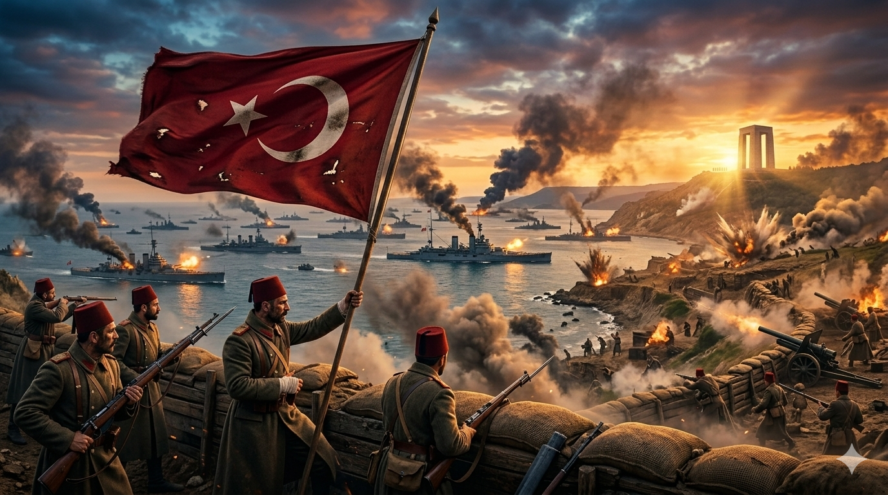
Kahramanlık, fedakarlık ve tarih burada yatıyor.
Çanakkale Savaşı, I. Dünya Savaşı’nın akışını değiştiren ve sadece Türk tarihinin değil dünya tarihinin de en stratejik ve sarsıcı savunma destanlarından biridir. 1915 yılında İtilaf Devletleri, Osmanlı Devleti’nin kalbi olan İstanbul’u ele geçirerek hem Osmanlı’yı saf dışı bırakmak hem de müttefikleri Rusya’ya lojistik destek sağlamak amacıyla bu harekâtı başlatmıştır; ancak beklemedikleri bir direnişle karşılaşmışlardır. 18 Mart 1915’te denizden Boğaz’ı geçmeye çalışan İngiliz ve Fransız donanması, Nusret Mayın Gemisi’nin stratejik hamlesi ve kıyı topçularının isabetli atışları sayesinde büyük bir yenilgiye uğramış ve geri çekilmek zorunda kalmıştır. Denizden geçemeyen İtilaf kuvvetleri, 25 Nisan 1915 sabahı Gelibolu Yarımadası’na çıkarma yaparak kara savaşlarını başlatmıştır. Arıburnu, Seddülbahir ve Kumkale gibi bölgelerde başlayan çarpışmalar, dünya harp tarihinin en kanlı siper savaşlarına sahne olmuş; Yarbay Mustafa Kemal’in “Ben size taarruzu değil, ölmeyi emrediyorum” sözüyle perçinlenen Türk askeri azmi, Anzaklar ve İngiliz birliklerini dar bir kıyı şeridine hapsetmiştir. Anafartalar, Conkbayırı ve Arıburnu’nda elde edilen başarılar, işgalci güçlerin planlarını altüst etmiş ve 1916 başında müttefik orduların yarımadayı tamamen terk etmesiyle sonuçlanmıştır. Bu zafer, “Çanakkale Geçilmez” ilkesini tarihe kazımış, Türk milleti için moral kaynağı olmuş ve ileride başlayacak Milli Mücadele’nin lider kadrosunu ve ruhunu oluşturmuştur. Küresel çapta ise Çanakkale’de kazanılan zafer, I. Dünya Savaşı’nın süresini en az iki yıl uzatmış, yardım alamayan Çarlık Rusyası’nın çöküşüne ve Bolşevik İhtilali’nin zemin kazanmasına yol açmıştır. Her metrekaresinde büyük fedakârlık yatan bu topraklar, bugün hâlâ dostluk ve barışın simgesi olarak her yıl binlerce kişi tarafından ziyaret edilmektedir.
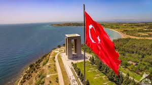
Çanakkale Şehitler AbidesiAbide Tüm coğrafyalardan gelen şehitlerimizin toplu bir şekilde göğe yükselişini temsil etmektedir.
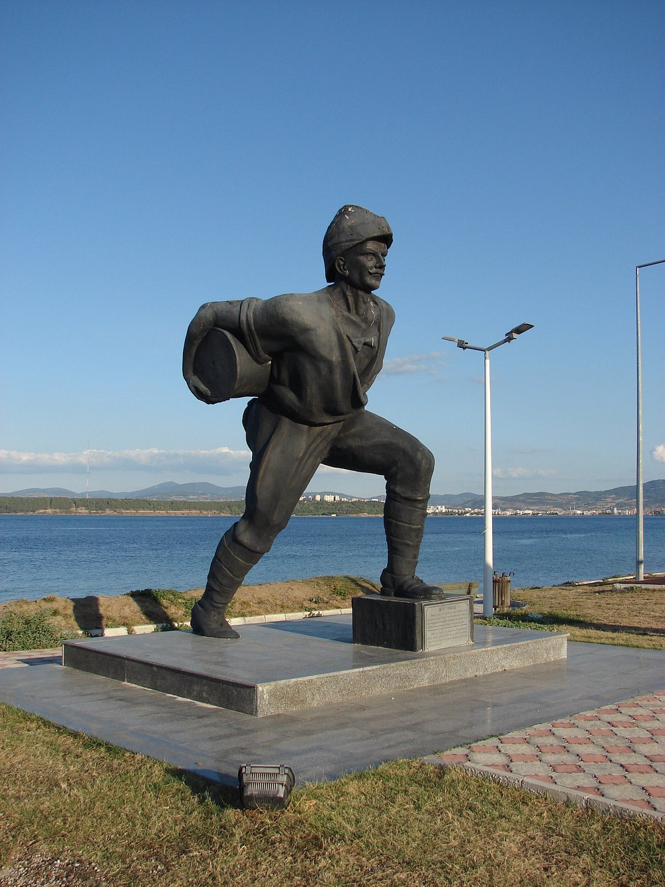
Seyit Onbaşı HeykeliDeniz savaşının tüm şiddetiyle devam ettiği bir anda, vinci bozulan topun 275 kg'lık mermisini tek başına kaldırarak topa yerleştirmiştir.
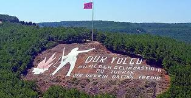
"Dur Yolcu" Anıtı1960'ta bir grup askerin girişimiyle oluşturulmuştur. Necmettin Halil Onan tarafından yazılan Çakıl Taşları adlı kitapta yer alan "Bir Yolcuya" şiirinin ilk mısraları Kilitbahir'deki tepeye yazılmıştır.
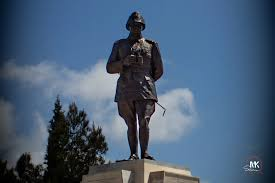
Conkbayırı Atatürk Zafer AnıtıConkbayırı Atatürk Zafer Anıtı, Kültür ve Turizm Bakanlığı tarafından Anafartalar Grup Komutanı Albay Mustafa Kemal'in 10 Ağustos 1915 tarihinde yönettiği Conbayırı taarruzu anısına 1993 yılında yaptırılmıştır. 2015 yılında ise Alan Başkanlığı tarafından restore edilmiştir.
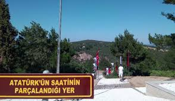
Atatürk’ün Saatinin Parçalandığı YerAnafartalar Grup Komutanı Albay Mustafa Kemal; 10 Ağustos 1915'te Conkbayırı süngü taarruzunu yönetirken bir şarapnel misketi göğsüne isabet etmiş, sağ göğüs cebinde bulunan saat sayesinde ölümden kurtulmuştu. Olayın yaşandığı yer, 4 top güllesi ve bir levha ile belirtilmiştir
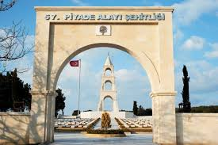
57. Piyade Alayı Şehitliği ve AnıtıPiyade Alayı Şehitliği, Çanakkale Kara Savaşları'nın başlangıcı kabul edilen Anzak çıkarması ve sonrasında gerçekleşen muharebelerdeki başarısıyla bilinen Osmanlı Ordusuna mensup askerlerden oluşan ve tamamı savaş sırasında yaşamını yitiren 57. Alay'a ithafen yapılan anıt mezar.
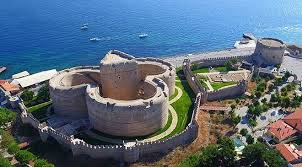
Kilitbahir KalesiFatih Sultan Mehmet’in Çanakkale Boğazı’na giriş çıkış yapan gemileri kontrol etmek için Yakup Bey’e yaptırdığı ve Osmanlı’nın stratejik savunma noktalarından biri olan Kilitbahir Kalesi, Çanakkale Savaşları’nda önemli bir rol üstlendi. İsminin ise “Denizin Kilidi” anlamındaki Kilid-ül Bahir kelimesinden geldiği söyleniyor.
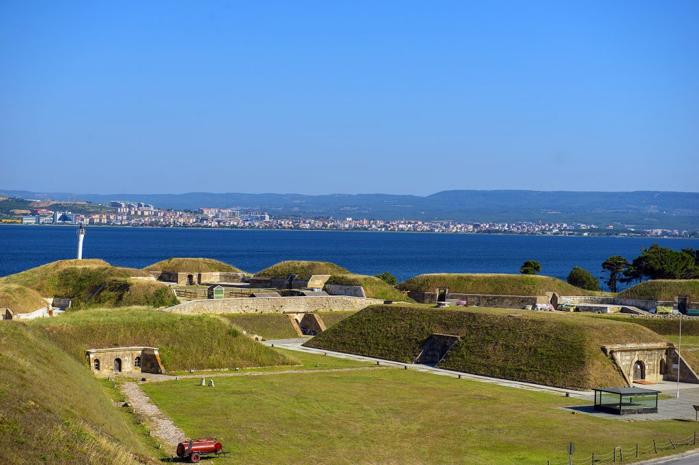
Namazgah TabyasıÇanakkale Boğazı’nın en dar noktasına yaptırılan ilk ve en büyük tabya olan Namazgâh Tabyası, savaş döneminde Osmanlı ordusunun en kritik savunma noktalarından biri olarak tarihe geçmiş.
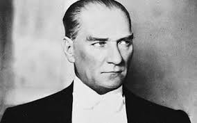
Mustafa Kemal Atatürk - 19. Tümen Komutanı
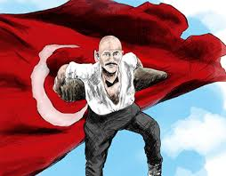
Seyit Onbaşı - Topçu eri
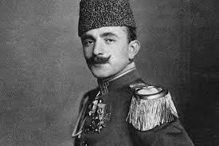
Enver Paşa - Çanakkale Deniz zaferi komutanı
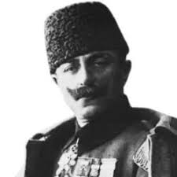
Albay Cevat Çobanlı - Çanakkale Boğazı Müstahkem Mevkii Komutanı
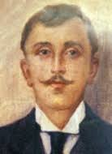
Deniz Yüzbaşı Tophaneli Hakkı Bey - Nusret Mayın Gemisi’nin komutanı
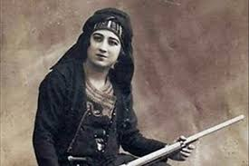
Nezahat Onbaşı - Alay ile Milli Mücadele'de yer aldı